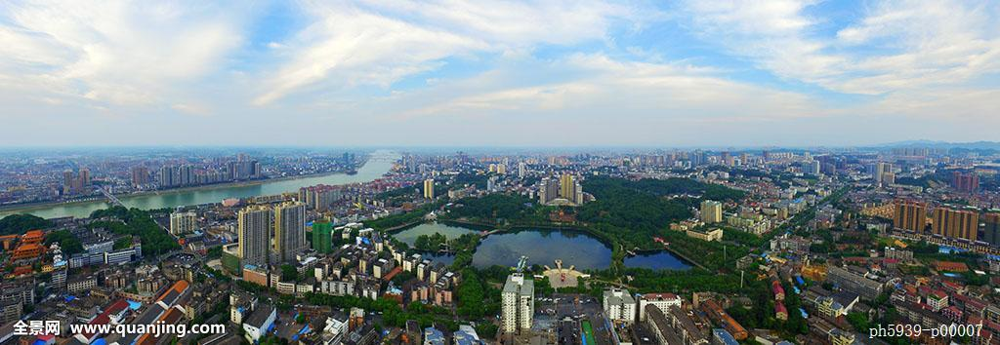

益阳欢迎您
益阳市位于湘中偏北，跨越资水中下游，处沅水、澧水尾闾，环洞庭湖西南，系由雪峰山余脉和湘中丘陵向洞庭湖平原过渡的倾斜地带。全市地形西高东低，成狭长状。地理坐标为东经110°43'02"~112°55'48"，北纬27°58'38"~29°31'42"。
市境属亚热带大陆性季风湿润气候，境内阳光充足，雨量充沛，气候温和，具有气温总体偏高、冬暖夏凉明显、降水年年偏丰、7月多雨成灾、日照普遍偏少，春寒阴雨突出等特征。年平均气温16.1℃—16.9℃，日照1348小时—1772小时，无霜期263天—276天，降雨量1230—1700毫米

益阳是远近闻名的“小有色金属之乡”。水资源丰富。山丘区有资江南北贯通，平原地带河网纵横、湖泊棋布，水路经洞庭湖外通长江，内联湘、资、沅、澧水道，向有灌溉、航行之利。野生动物资源丰富，环境极为优美。全市土地质量较好，有林地56.27万公顷，耕地24.54万公顷，水面13.99万公顷，草地8.2万公顷，湖洲6.53万公顷。滨湖平原由河湖冲积而成，土壤肥沃，适宜种植多种作物，是全国粮、棉、麻、油重要生产基地，素有“鱼米之乡”的美称。苎麻产量居全国首位，芦苇、黄(红)麻、糖料产量均居全省第一。中部丘陵岗地，土壤多属板页岩风化而成，呈酸性，含养分较高，是南竹、油茶、果木等经济林生产区。我市是全国有名的“竹子之乡”，南竹、茶叶产量居湖南省第一。西部中低山地，是主要林业生产基地。益阳水域广阔，全市总水面215万亩，已放养面积72万亩，其中精养面积33万多亩。大通湖面积达12.4万亩，是湖南省最大的内陆养殖湖泊。全市盛产乌鲤、鳜鱼、青鱼、大口鲶、优质鲫鱼、优质鲤鱼等名贵鱼和甲鱼、河蟹、青虾等特种水产品。
益阳农业发展得天独厚。全市十大家产品产区中，有不少被定为国家级的商品粮基地、商品棉基地、商品鱼基地、瘦肉型获得基地及综合商品基地。益阳工业已形成纺织、电力、化工、煤炭、机械、电子、建材、冶金、造纸、仪器等34个行业，以麻纺、造纸、食品、电子工业最著特色。主要名优工业产品有橡胶机械、柴油机、编织机、汽车灯泡、三氧化二锑、苎麻产品和肉类仪器等210多种。
益阳水陆交通十分便利。长益高速公路、石长铁路、319国道穿越境内，是省会长沙通往大西南的要道。水路经洞庭湖、内通湘、资、沅、澧四水，外达长沙各口岸。湘黔铁路穿越安化县境，洛（洛阳）──湛（湛江）铁路线在益阳设立枢纽站。
此刻的益阳正在高速发展，明天的益阳将会更加美好